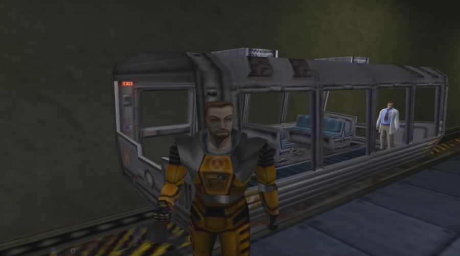

Первая часть Half-Life создана и выпущена компанией Valve в 1998 году и данная игра использовала сильно модифицированный движок игры Quake под названием GoldSrc. В качестве вдохновения для сюжета были взяты: произведение Стивена Кинга под названием The Mist (Мгла) и игра Doom, но так как Vavle в то время считали что игры жанра «шутер» могут быть чем-то большим чем просто игрой в стиле «беги и стреляй», то Half-Life была наполнена интересными персонажами и сюжетом, который, на то время, никто не видел.
Название самой игры Half-Life является научным термином, который назначался для тех или иных вещей и означал сокращение на половину (Я не ученый, поэтому можете поправить меня если я в чём-то ошибаюсь). А применялся данный термин в ядерной физике, от чего и становится понятно, почему для данной игры было выбрано именно это название, ведь события в игре так или иначе связаны с ядерной физикой и прочими подобными научными вещами. Кроме того, игра Half-Life использует греческий символ под названием «Лямбда» который в итоге стал логотипом данной серии игр.
Данная игра планировалась к выпуску где-то в 1997 году, но в последнюю минуту Valve подумали что игра не достаточно хороша, поэтому отменили её выпуск и переделали всю игру заново. В результате чего получилась та самая игра, которую мы все знаем и любим. Выход же самой игры был отодвинут аж почти на целый год, и в итоге игра вышла аж в 1998 году, после чего к ней вышло пару дополнений, среди которых ни одно не имело в своем названии цифры 3.
Немецкая версия данной игры имеет в себе некоторые довольно странные изменения. Например, когда вы убиваете союзных персонажей в игре, то они не помирают в этой версии игры, а садятся на пол и вертят головой, якобы показывая нам что они не могут поверить в то что мы их подстрелили. Кроме того, в этой же версии игры все вражеские человекоподобные персонажи, вроде тех же солдат, были заменены на роботов. Вот такая вот странная цензура присутствует в этой версии игры.
В Half-Life есть интересная фраза которую произносят все охранники, которая звучит как «Эй, найди меня позже и я куплю тебе пиво». И если перескочить с Half-Life 1 в Half-life 2 то в первой же миссии, когда мы встретим Барни Калхуна, который являлся протагонистом дополнения к первой Half-Life под названием Blue Shift, то можно услышать от Барни упоминание того что он нам должен пиво. Об этом он нам сам скажет фразой «По поводу того пива которое я тебе должен…». И что же тогда получается, что все охранники в первом Half-Life это один и тот же Барни Калхун? Видимо сюжет в этой серии игр не такой простой как нам кажется, и там есть что-то ещё, что могло бы объяснить данную фигню. Хотя… это можно объяснить тем, что разработчики просто использовали одну и ту же трехмерную модель для всех персонажей – охранников, но всё же со стороны сюжета это смотрится так, словно наш глав.герой спит, и все события ему просто снятся. Отсюда и куча разных Барни Калхунов в Half-Life 1.
Говоря о самом Барни. Несмотря на то, что данный персонаж является главным героем дополнения Blue Shift, вместо трехмерной модели самого Барни используется всё та же модель Гордона Фримена, что смотрится странным, когда мы встретим ещё одного Гордона Фримена проезжающего в вагоне мимо нас.
Оригинальная трехмерная модель самого же Гордона Фримена изначально была совершенно другой. Сам же Гордон был жирным дядькой в жёлтом HEV костюме, которого разработчики прозвали как: Иван Космический Байкер. А вот тот дизайн Гордона Фримена который мы знаем с вами сейчас был введен в игру намного позже, пройдя разные изменения в дизайне, пока наконец-то не была выбрана та самая модель, которую мы с вами знаем по сей день. Кроме того, изначально у Гордона Фримена была немного другая прическа, а сзади у него был хвостик, который затем убрали. И как интересный факт, об этом есть пасхалка в фанатском римейке оригинального Half-Life под названием Black Mesa, в котором один из охранников говорит нам «О, я смотрю ты отрезал свой хвостик. Продажная шкура!».

Если вы когда-нибудь задумывались о одном из боссов в данной игре по имени Гонарк, о том что он выглядит как огромный паук с большим яйцом на пузе, то вы были правы, ибо оно так и есть. Ведь данная идея с добавлением в игру огромного бронированного паука с яйцом на пузе появилась в офисах Valve, когда кто-то просто предложил что «А давайте добавим в игру огромного паука с яйцом на пузе». Само же название данного паука Gonarch означает два слова: Gonad и Monarch. И первое слово это очередное название репродуктивного органа, а Monarch означает статус босса для данного персонажа в данной игре.
В Half-Life 2 Episode 2 некий доктор Магнусон говорит нам, что он нам простит тот неприятный случай в Черной Мезе, который связан с кастрюлей супа и микроволновкой, если мы справимся с нашим очередным заданием. Так вот, если вы помните тот момент в первом Half-Life, когда мы могли зайти в одну из комнат, по пути к раздевалке с HEV костюмом, и включит микроволновку, которая затем взорвётся вместе с кастрюлей супа, то это именно тот самый момент о котором и упоминал доктор Магнусон. Видимо мы всё же именно его тогда оставили без обеда.
Покуда мы с вами ожидаем выхода третьего эпизода Half-Lif 2, или вообще хотя бы какой-нибудь игры с цифрой «три» в названии из серии Half-Life, то Япония давно получила свою новую игру в данной серии, которая называется как Half-Life 2: Survivor. Это аркадная игра вышедшая на аркадных автоматах, которая основывается на Half-Life 2 и которая получила позитивные отзывы, но является доступной только в Японии. И хоть это не третий эпизод Half-life, всё равно хочется порадоваться за Японцев. Хотя, зная для чего были созданы игровые автоматы, начинаешь немного радоваться что данная игра, на этих автоматах, не добралась к нам. А то высосали бы Valve с нас деньги конкретно "хотя они так сосут, но не это не важно".
Много раз были якобы всякие утечки касаемо разработки третьего эпихода Half-Life 2, и некоторые даже говорили о том что Valve отложила третий эпизод и сфокусировалась на разработке третей части Half-Life, но ни одна из них не подтвердилась и никто наверняка не знает, будет ли третья часть Half-Life или нет «Half-Life Alyx не в счет». Но точно известно что велась разработка над ЧЕТВЕРТЫМ эпизодом Half-Life 2 ВНЕ офисов Valve. И занималась разработкой четвертого эпизода студия Arcane, которые также известны как разработчики Dishonored. Название у четвертого эпизода было «Возвращение в Рэйвенхольм» и это должен был быть самостоятельный эпизод, который рассказывает о событиях произошедших до окончания второго эпизода Half-Life 2. Но в конце Valve подумали, что рынок уже заполнен играми про зомби, и поэтому отменили данную игру.
Если спросить у любого игрока о том что «Кто является самым таинственным персонажем в серии Half-Life» то ответ будет очевиден: это некий G-Man, о котором игрокам ничего неизвестно. Даже банально его настоящего имени никто не знает, если оно у него есть вообще, а сам персонаж в играх серии появляется то тут – то там, но не вступает в конфликт с игроком но и никак не помогает игроку. Но вот его псевдоним: G-Man, является просто сокращенным словом Goverment Man (Человек Правительства). А причина из за которой данный персонаж был создан и введен в игру довольно банальная и простая. Разработчики просто хотели ввести в игру персонажа, который не являлся для нас ни врагов и ни союзником, а кем-то по средине, чтобы в игре была хоть какая-то загадочность и тайна.
И последний интересный факт который заключается в солдатах – комбайнах в Half-Life 2. И из которых только специальные войска, которые мы встречаем уже с половины игры, не являются в полной мере людьми. А вот члены гражданской обороны, с которыми мы сражаемся в самом начале игры, это самые обычные люди которые предали человечество и перешли на сторону пришельцев. Их никто не подчинял себе и ничего им не вшивал в мозги, заменяя части плоти чтобы контролировать их. Они обычные люди, которые, чтобы выжить, перешли на ту сторону которая показалась им сильнее (Это кстати и объясняет, как Барни в HL2 смог внедриться к ним чтобы собирать информацию о их планах). В итоге они получили еду, жильё и возможность обеспечивать свои семьи, а также сохранили свои эмоциональные чувства. Но вот спец.войска комбайнов уже не являются в полной мере людьми, потому что от них, со стороны пришельцев, требуется полное повиновение. Поэтому, чтобы не дать членам спец.войск предать своих хозяев, то пришельцы просто стёрли им память, удалили практически все клетки отвечающие за эмоции, за исключением злости и повиновения, а также вставили им голосовой аппарат, из за которого мы и слышим их одинаковые роботизированные голоса. Кроме того, чтобы у членов спец.войск не возникало чувства нужды, пришельцы встроили в их организм специальную систему, которая просто напросто испаряет ненужные вещества из их организма. И именно поэтому, когда обычные члены гражданской обороны переходили званием выше, то теряли свою человечность, эмоции и становились подчиненными комбайнов.